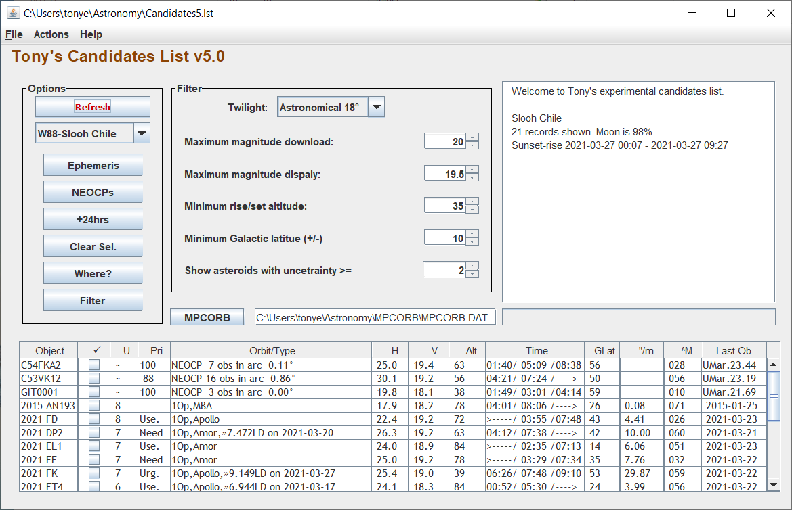

Candidates List 5
Installation
The program will be supplied by Tony.
It requires the Java Run Time Environment (JRE) to be installed on your machine. Put the program in a
conveient directory and set up a shortcut.
First usage
The first time you start the program use the MPCORB button to select your local copy of MPCORB.DAT then press the Refresh button.
Candidates List Screen

Menu
File
- New = Clear the list.
- Open = Open an existing candidates file.
- Save = Save the current file (defaults to Save As if not previously saved).
- Save As = Save the current list as a file.
- Exit = Quit the program.
Actions
These actions are mainly for testing but can be used selectively to refresh some data.
- get NEOCPs = Download NEOCP and PCCP pages from MPC.
- get Unusuals = Download Dates of Last Observations of Unusual Minor Planets list from the MPC (includes NEOs).
- get Distant = Download Dates of Last Observations of Distant Minor Planets list from the MPC.
- get Priority = Download Pririty, Risk (Sentry), Upcoming Approaches and Recent Approaches lists from ESA.
- scan MPCORB = Scans MPCORB, downloads and scans NEAp01.txt.
- get Sormano = Download Sormano Observatory Priority and Encounters lists.
Help
Options
- Refresh = Refresh all data.
- (Observatory selection): Select G40 or W88.
- Ephemeris = Show the MPC Ephemeris page for selected non-NEOCP objects.
- NEOCPs = Show the MPC Ephemeris page for selected NEOCP/PCCP objects.
- +24hrs = Show data for the following night.
- ClearSel = Turn off all selections.
- Where? = List visibility times of the selected objects at either observatory.
- Filter = Press this button to refresh the list after changing filter settings.
- = Use this button to select the local copy of MPCORB.
Filter
- Twilight = Select the twilight to apply when calculating earliest visibility.
- Maximum magnitude download = Objects in the downloaded lists, with magnitudes fainter than this, are ignored.
- Maximum magnitude display = Objects with magnitude fainter than this are not displayed.
- Minimum rise/set = The rise and set times are established based on a horizon set at this altitude.
An object must rise above this horizon to appear in the list.
- Minimum galactic latitude = Objects with a Galactic Latitude less than this are excluded from the list.
- Show asteroids with uncertainty >= Excludes objects with a lower uncertainty. Does not apply to NEOCPs.
Mission Time Filter
You can set Mission Times From -To to constrain the display of objects. Be careful to ensure the times are somewhere between sunset and sunrise.
- All of mission period = Objects are only listed if they are visible throught the From-To times.
- Not within 30m of Meridian = Objects must be visible and not positioned within 30 minutes of meridian crossing.
Note that you can also use the From time to control the start time of the MPC Ephemeris listing.
Table data
- Object = Number, Provisional Designation or NEOCP Temporary Designation.
- Tick = Selection box to control which objects are selected for ephemeris.
- U = MPC Uncertainty parameter. *=no parameter available.
- Pri. = Priority from the ESA (Spaceguard) priority list or Score from the MPC NEOCP list.
- Orbit/Type:
- NEOCP or PCCP including number and arc of observations available.
- 1Op =single opposition, nOp =multi-opposition, #Op =numbered and multi-opposition.
- Apollo..etc = Name of orbit type.
- PHA = Potentially Hazardous Object.
- 1km+ = Subject of the 1km+ project.
- »n.nnLD = Close approach of n.nn Lunar Distances on given date.
- VI.= Virtual impactor (Sentry List).
- PL = On the Sormano Observatory Priority List (objects with possible Earth close encounter).
- EL = On the Sormano Observatory Encounters List (objects with possible close encounter with Mercury, Venus or Mars).
- H = Absolute magnitude.
- V = Apparent V magnitude (taken from the MPC Dates of Last Observation list).
- Alt = Altitude at meridian.
- Time =Times (U.T.) visible above the specified Altitude at the observatory. Times may be inaccurate for very close
approaches/fast movers.
- rise time (or >--- if visible from sunset).
- meridian transit time.
- set time (or ---> if visible until sunrise).
- GLat = Galactic Latitude.
- "/m = Motion in arc-seconds per minute.
- ^M = Approximate angular distance from Moon (degrees).
- Last Ob. = Date of Last Observation (if available).